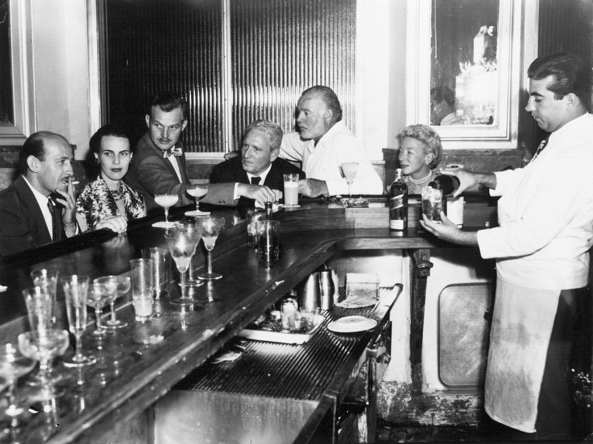

The Birth of a Revolution
Nestled in the heart of the city, "Eclipse" was born from the vision of two lifelong friends, a barista and a bartender. They dreamed of creating a space that effortlessly transitions from a cozy coffee shop by day to a vibrant bar by night. Constructed in a renovated historic building, they preserved its rustic charm while adding modern, multifunctional furniture. Their goal was to foster community, providing a welcoming space for daytime relaxation and nighttime socializing. The seamless blend of atmospheres caters to urban dwellers dynamic lifestyles, making it a beloved neighborhood gem.